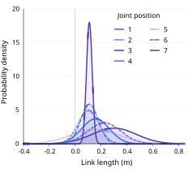

RoboMorpher
Scaling Robot Morphology Representations
for Cross-Embodiment Action Prediction
- 1
- 2
- 3
- 4
- 5
- 6
- 7
- 8
Actions need to
understand the body.
The same joint configuration can produce different link poses on different robots. RoboMorpher connects control coordinates to their spatial effects through a morphology-conditioned action tokenizer.
Kinematic pretraining learns codes that reconstruct joint angles and link poses. A VLA policy predicts these codes and refines continuous trajectories.
morphology–state pairs
joints per generated arm
shared RVQ codebooks
frames per action chunk
MorphGen
Procedural arms and kinematic supervision.
RoboMorpher
Morphology-conditioned, joint-aligned action codes.
Morphology-aware VLA
Discrete prediction and continuous refinement.
Geometry becomes supervision.
Position-specific link-length priors guide sampling. Collision-aware inverse kinematics filters home poses, and forward kinematics supplies joint-aligned pose targets.
Link-length priors

Joint distribution
Generated Morphologies
03 Method
04 Embodibench
Single- and dual-arm (same-side / opposite-side) manipulation in SAPIEN.
05 Results
Best mean success among joint-space methods.
1,500 trials / method / benchmarkRoboTwin 2.0
56.40%
+9.73 ppvs. StarVLA (joint)
EmbodiBench
23.27%
+15.34 ppvs. StarVLA (joint)
Success rate (%) ↑
| Method | RoboTwin 2.0 | EmbodiBench |
|---|
See the full results in the paper (PDF).
RoboTwin 2.0 Results
Success rate (%) ↑
EmbodiBench Results
Success rate (%) ↑
Cite RoboMorpher
@unpublished{lin_robomorpher,
title = {{RoboMorpher: Scaling Robot Morphology Representations for Cross-Embodiment Action Prediction}},
author = {Lin, Wenwei and Qin, Yan and Deng, Weiliang and Li, Zixuan and Wang, Kaixuan and Chen, Zanxin and Chen, Yue and Yang, Tianshuo and Chen, Junting and Liang, Zhixuan and Mu, Yao and Lyu, Ximin and Xu, Renjing and Luo, Ping and Chen, Tianxing},
note = {Manuscript}
}